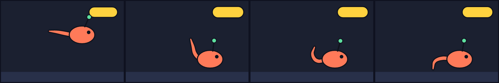
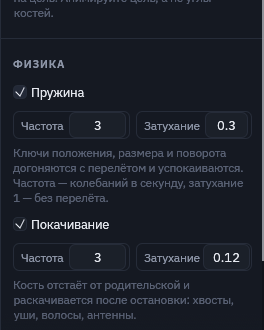
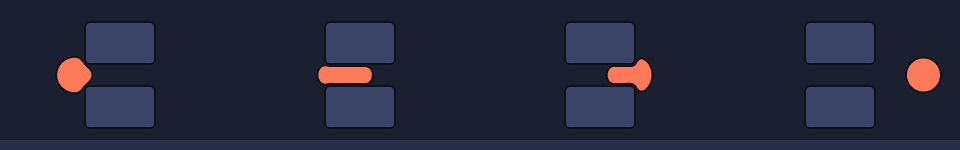
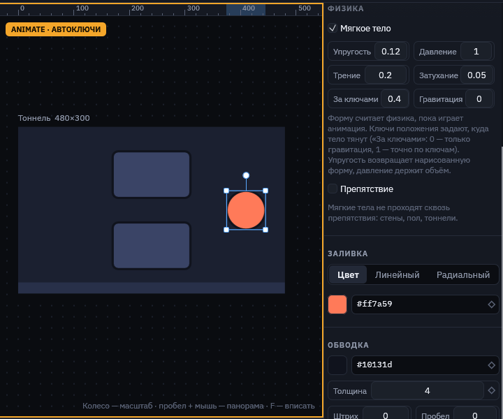

Физика
Физика в Motif — это не отдельная симуляция мира, а расчёт анимации через физический параметр. Ключи говорят, куда объект должен прийти, а пружины, покачивание костей и мягкие тела решают, как он туда придёт: с перелётом, с отставанием, сминаясь.
Пружины и покачивание
Пружина (spring) есть у любого объекта и группы. Ключи положения, размера, масштаба, поворота и наклона больше не исполняются точно: объект догоняет их на пружине, проскакивает и успокаивается. Достаточно поставить резкие ключи — «поп», отскок и дрожь после остановки посчитаются сами. Цвет и прозрачность пружина не трогает.
Покачивание (jiggle) есть у костей. Кость отстаёт от движения родительской кости и раскачивается после её остановки: хвосты, уши, волосы, антенны, верёвочки. Цепочка костей с покачиванием даёт волну по хвосту. Длина кости не меняется, кожа (skin) гнётся вслед.

springs.msc: у тела только ключи прыжка. Хвост из трёх костей с jiggle отстаёт и закручивается после приземления, кнопка выпрыгивает с перелётом благодаря spring.
| Поле | В скрипте | Что делает |
|---|---|---|
| Пружина | spring | Ключи догоняются на пружине. |
| Покачивание | jiggle | Только у костей: отставание и раскачивание. |
| Частота | spring 3 | Колебаний в секунду, до 30. Больше — тугая быстрая пружина, меньше — ленивая. |
| Затухание | spring 3 0.3 | 0 — качается долго, 0.3 — пара отскоков, 1 и больше — догоняет без перелёта. |
- Поп кнопки. Масштаб 0 → 1 ключами с
hold, у кнопкиspring 3 0.35. - Тяжёлый прыжок. Ключи положения без смягчения,
spring 2 0.5: объект немного проседает после остановки. - Хвост, уши. Цепочка костей, у каждой
jiggle 2.5 0.4; для упругой антенныjiggle 3 0.12.
Мягкие тела
Мягкое тело — фигура, форму которой считает физика. Ключи говорят, куда тело тянут, а как оно при этом сожмётся, отстанет, сплющится о пол или протиснется в щель, решают упругость, давление и трение. Препятствия — обычные фигуры с пометкой «Препятствие». Фигура остаётся вектором: физика двигает точки её контура.

tunnel.msc: у шара один ключ — движение вправо. Сжатие в тоннеле и восстановление формы посчитаны.Как это работает
- Контур тела становится кольцом точек примерно через каждые 5 единиц. Точки тянутся к нарисованной форме (упругость), всё кольцо держит свою площадь (давление), препятствия выталкивают точки наружу.
- Пружины, покачивание и мягкие тела считаются вместе. Расчёт идёт от начала анимации шагами по 1/600 секунды. Одно и то же время всегда даёт одну и ту же позу, поэтому таймлайн можно перематывать как обычно. Посчитанные кадры запоминаются, и перемотка назад ничего не пересчитывает.
- В Design тело показано таким, как нарисовано. Физика работает в Animate, при проигрывании и при экспорте: кадры экспорта получают уже посчитанную форму, в игре ничего пересчитывать не нужно.
- Препятствия могут двигаться ключами или костями: тело чувствует их там, где они на этом кадре. Обводка учитывается, тело останавливается у её края.
Раздел «Физика»

| Поле | В скрипте | Что делает |
|---|---|---|
| Мягкое тело | soft | Включает физику для фигуры. |
| Упругость | soft 0.5 | Как быстро тело возвращает нарисованную форму, 0–1. Мало — желе, много — резиновый мяч. |
| Давление | pressure 1 | Площадь относительно нарисованной. 1 — тело не худеет, сжатое в одном месте выпирает в другом. Меньше 1 — сдувается. |
| Трение | friction 0.3 | Насколько тело тормозит, скользя по препятствию, 0–1. |
| Затухание | damp 0.05 | Как быстро гаснут колебания, 0–1. |
| За ключами | drive 0.3 | Насколько тело следует своим ключам положения и угла, 0–1. 1 — центр точно по ключам, форма при этом всё равно мнётся. 0 — ключи не действуют, тело движет только гравитация. |
| Гравитация | gravity 900 | Ускорение вниз в единицах артборда за секунду². 0 — невесомость. |
| Препятствие | solid | У любой фигуры: мягкие тела сквозь неё не проходят. |
Рецепты
- Протиснуться в щель. Препятствия по бокам, у тела ключ положения на другую сторону,
soft 0.1–0.2,drive 0.3–0.5. - Капля падает и плющится. Пол — прямоугольник с
solid, у каплиgravity 900 drive 0 soft 0.2. - Тяжёлый мягкий мяч.
soft 0.6 pressure 1 damp 0.02: долго вздрагивает после удара. - Отстающий хвост. Тело с
drive 0.15догоняет свои ключи с запаздыванием и вытягивается по ходу.
В скрипте
rect top at 240 86 size 140 84 solid
rect bottom at 240 214 size 140 84 solid
ellipse ball at 70 150 size 70 soft 0.12 friction 0.2 drive 0.4
rect button size 120 44 spring 3 0.35
bone tail len 30 jiggle 2.5 0.4
anim Squeeze 3s {
ball.x 0: 70 | 3: 410
}Пока тела сталкиваются только с препятствиями, не друг с другом. В машине состояний физика считается на ходу, пока машина играет: резкая смена состояния тоже смягчается пружинами. В повторяющейся анимации расчёт начинается заново с каждым кругом.